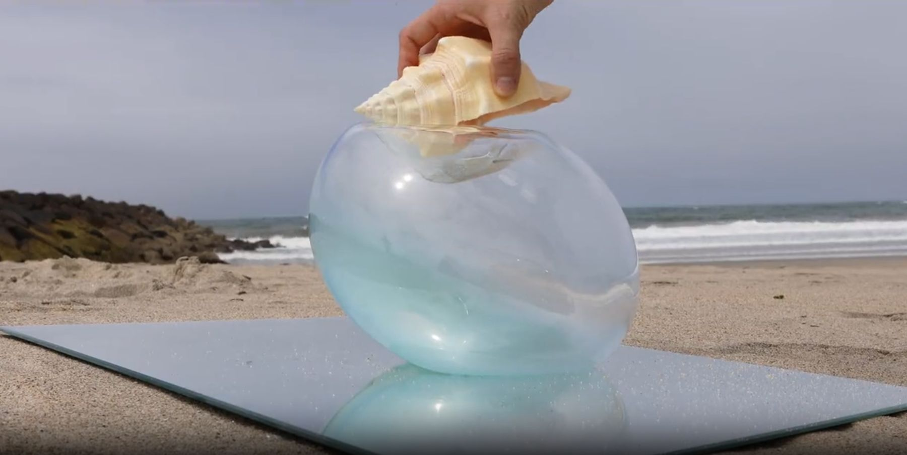
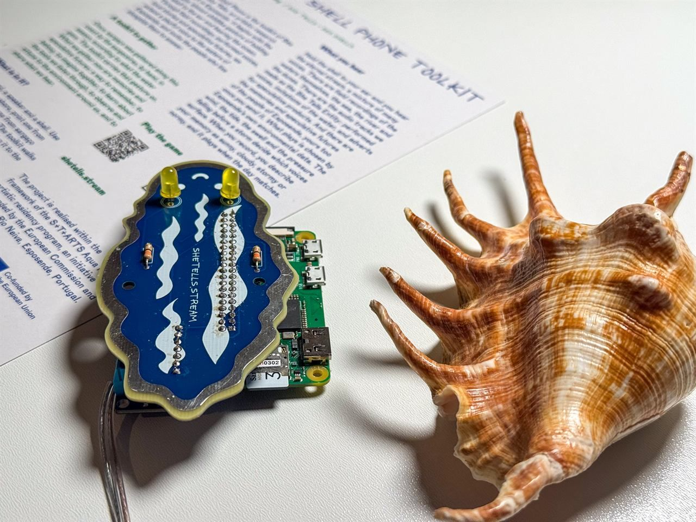
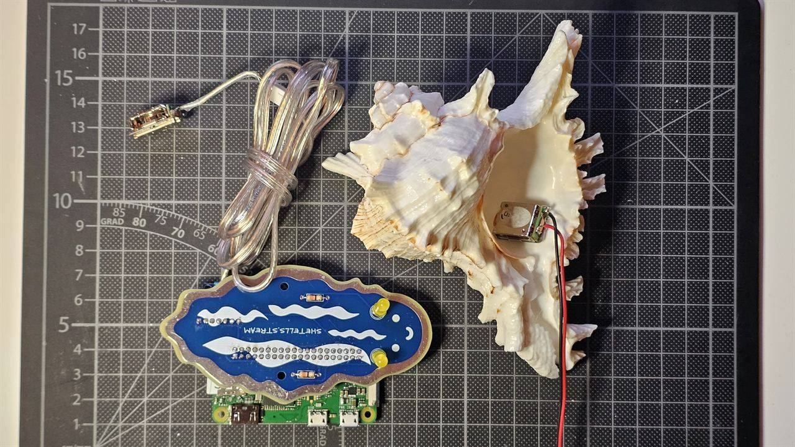
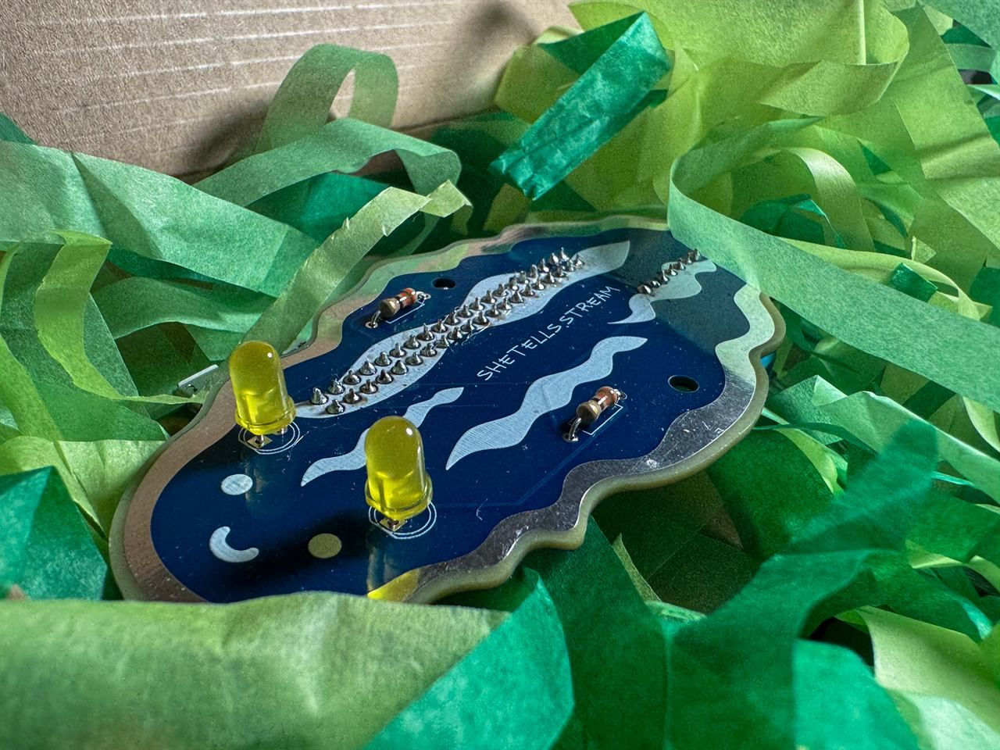
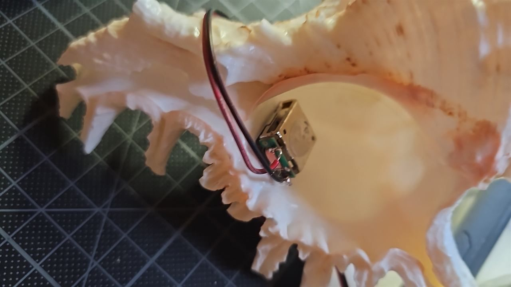
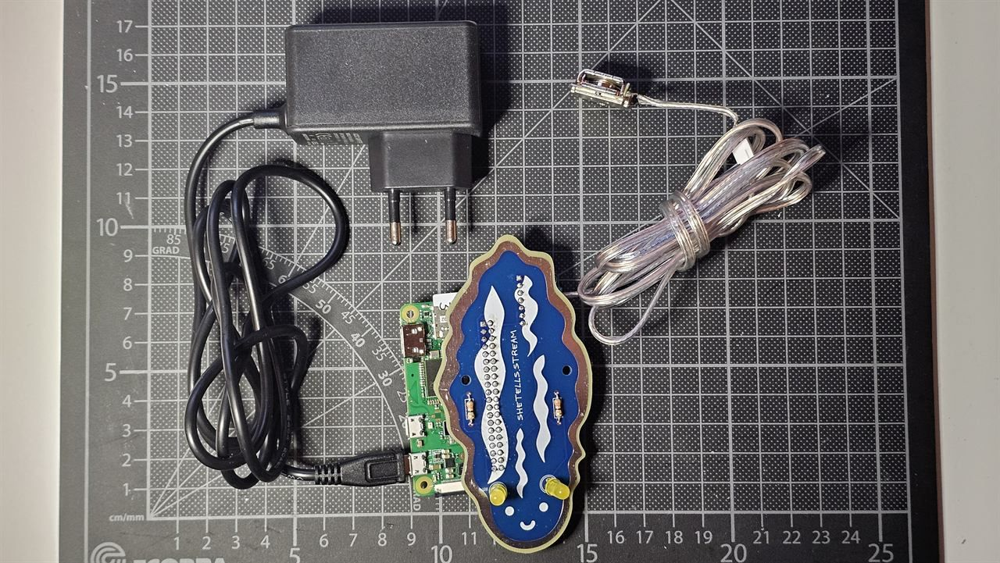
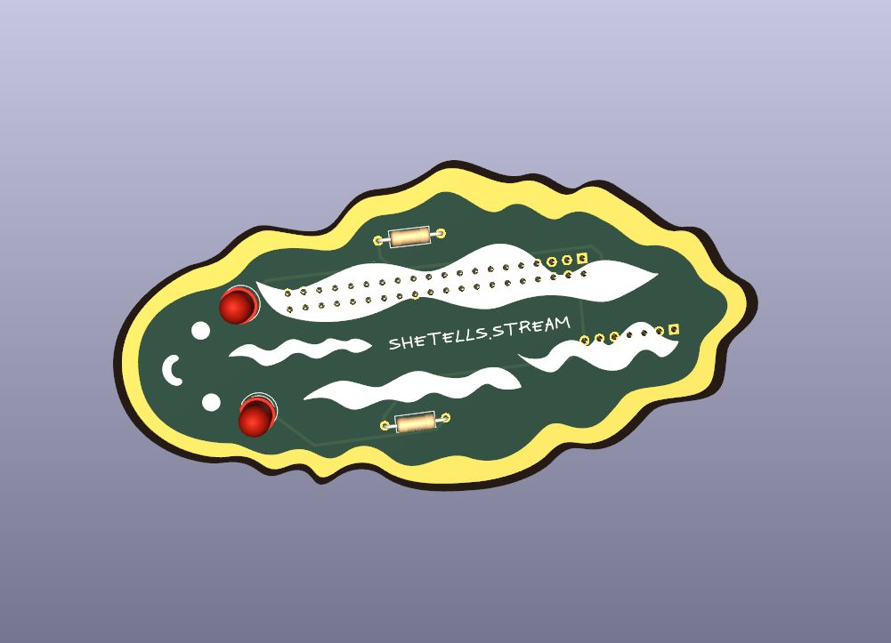

She Tells, Sea Shells

Sea Shells, She Tells, is an artistic research project in Esposende. It begins with the simple, almost childlike gesture of holding a shell to the ear and hearing the ocean. Through field recordings, performed voices, local stories and speculative futures, we extend a playful voice to the waters of Esposende, and invite the people who live alongside them to answer.
The Shellphone
The Shellphone is a shell you can listen to. Inside a shell sits a Raspberry Pi Zero W (or Zero 2 W) and a small custom audio board. When you hold the shell to your ear, it connects over WiFi to shetells.stream and plays its live stream - a flow of voices and memories that people have shared about water: the sea, rivers, drought, the things we are losing. It turns a familiar gesture - listening to a shell - into a way of listening to each other, and to the water.



How it works
The Shellphone is three parts, hidden inside a shell:
Raspberry Pi Zero W or Zero 2 W - a tiny WiFi computer. It connects to the internet and plays the live stream from shetells.stream.
Custom audio board - a small PCB that plugs onto the Pi like a "HAT". It carries a MAX98357A I2S amplifier that turns the Pi's digital audio into a real signal, plus two LED "antennas" that light up whenever the Shellphone has power. The board is shaped like a snail.
Bone-conduction transducer (8 Ω, 1 W) - instead of a normal speaker, a small transducer that makes whatever it touches vibrate. Glued inside the shell, it turns the shell itself into the speaker, so the sound seems to rise out of the shell in your hand.



Credits
- Made by Helin Ulaş, Rita Eperjesi, Mario Guzman, Christian Kokott
- Funding and host Co-funded by the European Union within the S+T+ARTS Aqua Motion residency, hosted by Rio Neiva, Esposende.
Source: shetells.stream